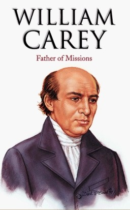

William Carey
father of modern missions

Here's the timeline of William Carey :
- 1761 - Born in Paulerspury, England
- 1779 - Went to work for the local shoemaker
- 1781 - Married Old's sister-in-law Dorothy Plackett in the Church of St John the Baptist, Piddington.
- 1783 - Baptised by Ryland and committed himself to the Baptist denomination.
- 1785 - Appointed the schoolmaster for the village of Moulton.
- 1789 - Became the full-time pastor of Harvey Lane Baptist Church in Leicester.
- 1792 - Published his groundbreaking missionary manifesto, An Enquiry into the Obligations of Christians to use Means for the Conversion of the Heathens.
- 1792 - BMS(Baptist Missionary Society) was founded in October
- 1793 - Sailed from London aboard a British ship in April
- 1793 - Went to calcutta, but was forced to leave the British Indian territory by non-Baptist Christian missionaries
- 1794 - Carey opened, at his own cost, what is considered the first primary school in all of India.
- 1807 - Dorothy Carey died
- 1812 - A fire in the print shop caused £10,000 in damages and lost work. Among the losses were many irreplaceable manuscripts, including much of Carey's translation of Sanskrit literature and a polyglot dictionary of Sanskrit and related languages, which would have been a seminal philological work had it been completed. However, the press itself and the punches were saved, and the mission was able to continue printing in six months. In Carey's lifetime, the mission printed and distributed the Bible in whole or part in 44 languages and dialects.
- 1818 - The mission founded Serampore College to train indigenous ministers for the growing church and to provide education in the arts and sciences to anyone regardless of caste or country. Frederick VI, King of Denmark, granted a royal charter in 1827 that made the college a degree-granting institution, the first in Asia
- 1820 - Founded the Agri Horticultural Society of India at Alipore, Calcutta, supporting his enthusiasm for botany. When William Roxburgh went on leave, Carey was entrusted to maintain the Botanical Garden at Calcutta. The genus Careya was named after him.
- 1834 - Died at the age of 72.
"saw India not as a foreign country to be exploited, but as his heavenly Father’s land to be loved and saved...
he believed in understanding and controlling nature instead of fearing, appeasing or worshipping it;
in developing one’s intellect instead of killing it as mysticism taught.
He emphasized enjoying literature and culture instead of shunning it as maya."
— Vishal Mangalwadi
If you have time, you should read more about this incredible human being on his Wikipedia entry.